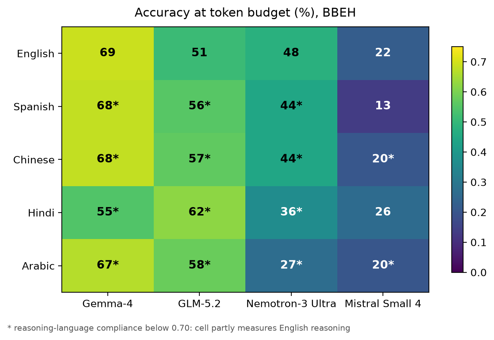
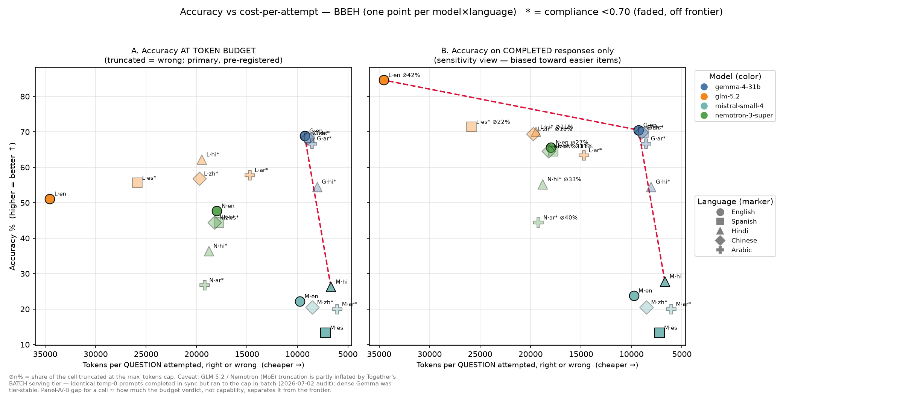

Reasoning efficiency
Most models won't think in the language you ask for
I set out to test whether reasoning in a cheaper language buys the same accuracy for fewer tokens. On hard problems it doesn't, and the reason why surprised me twice.
Reasoning models spend thousands of tokens thinking before they answer a single question, and those thinking tokens are the bill. On most serving platforms output tokens cost three to six times what input tokens cost, so the reasoning trace, not the answer, is where the money goes. That has kicked off a search for ways to make the trace shorter without making the model dumber.
One idea is unusually appealing because it looks free. A recent paper reported that if you tell a model to reason in a language whose tokenizer packs more meaning per token, you get the same accuracy on math benchmarks for 20 to 40 percent fewer tokens. No fine-tuning, no distillation, just a different instruction in the system prompt. A free efficiency knob.
I wanted to know if that knob still turns when you leave the lab. So I built a study around three things that break nice results: hard problems instead of saturated benchmarks, a real token budget instead of unlimited generation, and the actual serving APIs people deploy on instead of a clean local run. The short version is that the knob mostly isn't connected to anything, and two of the biggest effects I measured had nothing to do with language at all.
The setup
Four open-weight reasoning models, spanning a US, EU, and China release: Nemotron 3 Ultra, Gemma 4, GLM-5.2, and Mistral Small 4. Five instructed reasoning languages: English, Spanish, Hindi, Chinese, Arabic. The benchmark questions stay in English and are never translated; only the system prompt changes, telling the model which language to think in, and the final answer always comes back in English so grading stays simple. Everything on BIG-Bench Extra Hard, at temperature 0, three runs each. About 900 calls in total.
One design choice mattered more than any other. Before comparing efficiency, I checked whether the model actually reasoned in the language I asked for, using a language detector on the raw trace. A cell where I said "reason in Hindi" but the model reasoned in English is not a measurement of Hindi efficiency. It is English reasoning wearing a Hindi label, and reporting it as anything else is a category error. So low-compliance cells get flagged and kept out of the efficiency comparison.
That single check is what turned the study from a tidy benchmark table into something more honest, because the first finding is that the check fails almost everywhere.
Finding 1: compliance collapses on hard problems
On a standard benchmark the directives work well. With in-language instructions, a one-shot example, and a strict "if you slip into English, switch back" clause, median in-language compliance across the non-English cells was 81 percent on BIG-Bench Hard. On the harder BIG-Bench Extra Hard, the same directives, the same models, the same prompts, it fell to 36 percent. Three of the four models revert to English on hard items no matter what you ask for. Only Mistral Small 4 keeps any non-English cell above my trust threshold.
I hand-checked the flagged traces to make sure the detector was not just confused. It was not. A trace that was supposed to be in Spanish would open with "We are given a question..." and continue in fluent English to the end. The model reads the instruction, and on a genuinely hard problem it quietly does the reasoning in the language it is strongest in.
The free knob turns out to mostly not be connected. On the problems where efficiency would matter, most of the non-English cells are not measuring non-English reasoning at all.
There is a caveat I owe you here: harder problems produce much longer traces, and a trace-level compliance measure will mechanically look worse as traces get longer, even at a fixed per-sentence slip rate. So difficulty and length are tangled together in this number. But the direction is not in doubt, and the practical consequence stands: you cannot claim a cross-lingual efficiency win in a cell where the model never reasoned cross-lingually.

Finding 2: the scoring policy, not the model, picks the winner
Now the part I did not expect to be writing about. When a response runs out of its token budget mid-thought, you have to decide what to do with it, and that decision quietly changes who wins.
If you count a truncated response as a wrong answer at full cost, which is the deployment-honest reading since you paid for the tokens and got nothing, Gemma 4 anchors the accuracy-versus-cost frontier at 69 percent accuracy for about 9,300 tokens a question. Every GLM and Nemotron cell is both less accurate and 1.9 to 3.7 times more expensive per question. Gemma looks like the obvious choice.
If instead you score only the responses that finished, GLM-5.2 becomes the single most accurate system in the entire study, at 85 percent in English. It just costs 3.7 times as many tokens to get there, and inside a fixed budget it frequently does not finish. Both statements are true. They answer different questions, and they produce opposite rankings from the same 900 calls.
The lesson is boring and load-bearing: a reasoning-model leaderboard that does not state its truncation policy is not telling you enough to act on. The largest single effect in my main results table is not a model or a language. It is which of these two policies you picked.

Finding 3: the billing tier changed which model won
This is the one that made me re-audit the whole pipeline. To save money on 900 calls, I first ran the experiment on the provider's discounted batch tier, which is about half price and returns the exact same response format. It seemed like a free 50 percent off.
It was not free. On the batch tier, GLM truncated 84 percent of the time on a pool of items. On the standard synchronous tier, the same prompts at the same temperature and the same token cap truncated 26 percent of the time. Same model, same inputs, different billing tier, wildly different behavior. I reran all 120 batch-truncated GLM calls synchronously and 62 percent of them completed cleanly. GLM's budgeted accuracy roughly doubled, and a Gemma-over-GLM gap that had been statistically significant on the batch data quietly dissolved once I corrected it.
The underlying cause is not mine to claim as new. Temperature 0 is not actually deterministic for large mixture-of-experts models served under load, because the numerics depend on how requests get batched together, a phenomenon others have documented carefully. What my study adds is the cost of ignoring it in an evaluation: across three supposedly identical runs, the two large mixture-of-experts models agreed with themselves on the correctness of only 55 and 72 percent of items, versus 84 to 86 percent for the other two. Run the same eval on the tier you got a discount on, and you can hand yourself a statistically significant conclusion that is an artifact of the serving stack.
If you run reasoning-model evals, four things I would now insist on:
Gate on whether the model did what you told it to before you trust a cell. State your truncation policy out loud. Do not mix serving tiers, and evaluate on the one you will deploy on. For mixture-of-experts models, report per-item agreement across runs, because a single temperature-0 number is noisier than it looks.
What I actually believe now
On saturated benchmarks, cross-lingual reasoning looks like a free lunch. On hard verbal reasoning under a budget, I found no lunch at all. The models that could comply mostly stopped complying, the one that kept complying was the weakest in the group, and the apparent efficiency differences that remained were dominated by my own scoring choices and by the infrastructure underneath, not by language.
I want to be honest about the limits. This is 15 items per cell on a single benchmark family, so only the large gaps are statistically real and the fine-grained language orderings are not. The 62 percent completion rate from the serving-tier rerun is an upper bound on the artifact, not a clean estimate, because I did not run a matched same-tier control. The compliance collapse tangles difficulty with trace length. None of that changes the headline, but all of it belongs in the room.
The result I keep coming back to is the meta one. I set out to measure a property of languages, and the three biggest things I found were about measurement itself: whether the model obeyed the instruction, how I scored the failures, and which server answered the call. That is not a detour from the efficiency question. For anyone trying to evaluate these models honestly, it might be the whole thing.